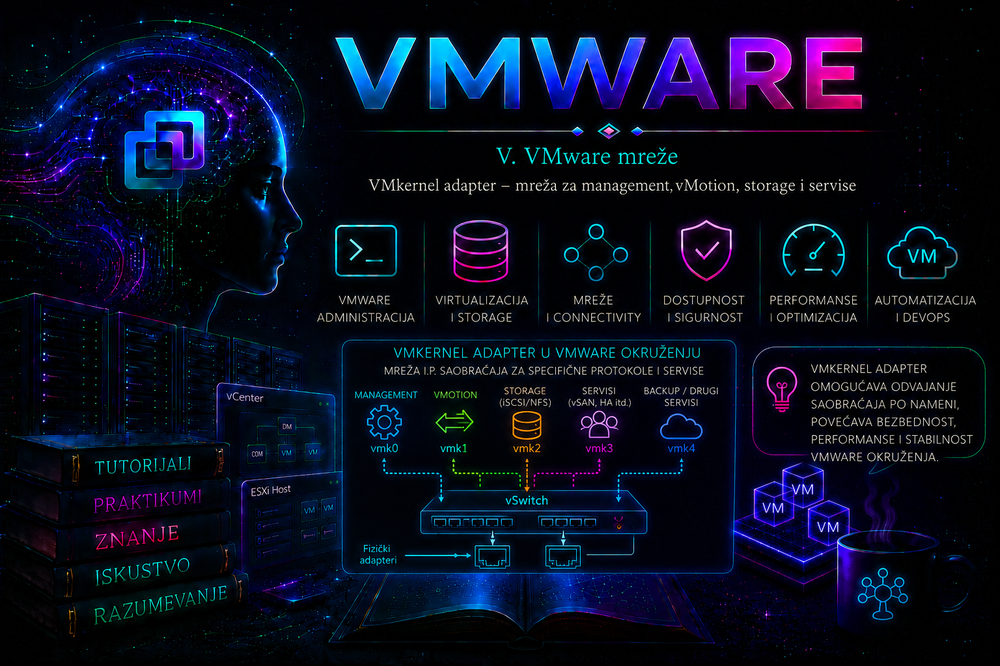

VMware

VMkernel adapter, označen kao vmk0, vmk1 i tako dalje, jeste virtuelni mrežni interfejs samog ESXi hosta. Prethodne lekcije objasnile su virtual switch, Port Group i VLAN; sada se taj put završava IP identitetom preko koga VMkernel pristupa administratorskoj mreži, drugim hostovima i IP storage sistemima. VMkernel adapter nije mrežna kartica virtuelne mašine: gostujući operativni sistem ga ne vidi i ne koristi neposredno.
Korisno je razlikovati tri sloja. Port Group određuje gde se interfejs priključuje i, između ostalog, koji VLAN koristi; VMkernel adapter nosi IP konfiguraciju i oznake sistemskih servisa; TCP/IP stack obezbeđuje tabelu rutiranja, podrazumevani gateway, DNS i druga svojstva protokolskog steka. Fizička dostupnost zatim zavisi od uplink-a, teaming politike, fizičkih switch-eva i cele putanje. Zbog toga činjenica da vmk1 ima ispravnu IP adresu još nije dokaz da servis može da komunicira.
Zašto postoje VMkernel adapteri?
ESXi mora da komunicira i kada nijedna virtuelna mašina nema mrežu. Preko VMkernel interfejsa host uspostavlja management vezu sa vCenter Server-om i administratorskim stanicama, prenosi memorijsko stanje pri vMotion migraciji, pristupa NFS ili iSCSI ciljevima, razmenjuje vSAN podatke, Fault Tolerance logove i saobraćaj vSphere Replication-a. DNS, NTP, syslog, directory servisi, backup transport i drugi agenti takođe koriste mrežni stek hosta, ali to ne znači da svaki od njih ima poseban izbor u čarobnjaku za VMkernel adapter.
Jedan adapter tehnički može nositi više vrsta saobraćaja, što je prihvatljivo u maloj laboratoriji. U produkciji se razdvajanje projektuje prema riziku: management traži strogu kontrolu pristupa i pouzdanost, vMotion veliku propusnost i često nizak RTT, a storage predvidljivu latenciju i gubitke bliske nuli. Logičko razdvajanje VLAN-ovima nije isto što i fizička redundansa; dve Port Group mreže koje koriste isti jedini uplink i dalje imaju zajedničku tačku otkaza.
Tipovi VMkernel servisa i važna terminološka razlika
| Servis ili namena | Kako se vezuje | Administratorska napomena |
|---|---|---|
| Management | Oznaka Management traffic na VMkernel adapteru | Koriste ga vCenter i direktno upravljanje hostom. Potrebna je najmanje jedna management mreža; redundantna putanja je produkciona potreba. |
| vMotion | Oznaka vMotion traffic | Za šifrovanje, kompatibilnost, propusnost, latenciju i višestruke VMkernel putanje važe verzijski i dizajnerski preduslovi. Sama oznaka ne dokazuje prohodnost. |
| Provisioning | Oznaka Provisioning traffic | Koristi se za cold migration, cloning i snapshot migration saobraćaj. Kada je uključen na VMkernel adapteru, on prenosi ovaj saobraćaj; ako provisioning mreža zakaže, servis može preći na vMotion mrežu, u skladu sa podržanim ponašanjem konkretne verzije. |
| Fault Tolerance logging | Oznaka Fault Tolerance logging | Prenosi FT sinhronizaciju između primarne i sekundarne VM; zahtevi zavise od FT konfiguracije, brzine linka i podržanog izdanja. |
| vSAN | Oznaka vSAN traffic | Nosilac klasterskog storage saobraćaja. Dizajn, MTU, RDMA i topologija moraju pratiti vSAN vodič i HCL za konkretnu verziju. |
| vSphere Replication / NFC | Posebne oznake kada su dostupne u verziji i proizvodu | Omogućavaju izolovanje odlaznog replication i NFC saobraćaja. Ne treba ih mešati sa običnim IP storage pristupom. |
| NFS | IP saobraćaj preko izabranog VMkernel izvora i rute | NFS nije generički servisni checkbox. Izbor putanje zavisi od subnet-a, ruta, netstack-a i NFS multipathing dizajna. |
| Software iSCSI | IP saobraćaj; po potrebi eksplicitni VMkernel port binding | iSCSI nije servisni checkbox. Port binding ima stroge teaming i subnet preduslove i nije potreban niti ispravan u svakom rutiranom ili multipath scenariju. |
Dostupnost pojedinih servisnih oznaka, mogućnost kombinovanja i zahtevi zavise od verzije vSphere/VCF platforme, licence i povezanog proizvoda. Ova lekcija koristi vSphere 8.x kao glavni operativni okvir; u novijim VCF 9.x okruženjima obavezno treba proveriti odgovarajući Networking, vSAN, Live Recovery i Configuration Maximums vodič pre produkcionog dizajna.
Najčešća VMkernel topologija
ESXi esxi01
-- vmk0 Management VLAN 10 192.168.10.21/24 defaultTcpipStack
-- vmk1 vMotion VLAN 20 172.16.10.21/24 vmotion
-- vmk2 Storage VLAN 30 172.16.20.21/24 defaultTcpipStack
-- vmk3 vSAN VLAN 40 172.16.30.21/24 defaultTcpipStackOvo je obrazac, a ne univerzalni recept. Broj adaptera ne daje redundansu sam po sebi. Za svaki servis treba dokumentovati Port Group, switch, VLAN, IP subnet, TCP/IP stack, MTU, aktivne i rezervne uplink-ove, fizičke switch-eve, dozvoljene tokove i vlasnika mrežne promene. Kod vSphere Distributed Switch-a treba planirati i oporavak management mreže ako vCenter nije dostupan; ESXi DCUI i opcija za vraćanje standardnog switch-a predstavljaju poslednju liniju oporavka, ne redovan postupak promene.
VMkernel, Port Group, VLAN i fizička putanja
VMkernel servis
|
vmk1: 172.16.10.21/24, MTU 9000
|
Port Group "vMotion", VLAN 20
|
vSS ili vDS, teaming politika
|
vmnic uplink -- fizički trunk/access port -- udaljeni host
Na vSphere Standard Switch-u VMkernel Port Group i VMkernel adapter nastaju kao povezani, ali različiti objekti. Na vSphere Distributed Switch-u VMkernel adapter se priključuje distributed port group-i, a upravljanje zahteva vCenter i odgovarajuću licencu. VLAN ID se tipično postavlja na Port Group-i, ne na samom vmkX. Ako je Port Group pogrešno označena, vmkping neće popraviti putanju promenom IP adrese.
IP konfiguracija, rutiranje i izbor izvornog interfejsa
VMkernel adapter ima MAC adresu, IPv4 i/ili IPv6 konfiguraciju, MTU, stanje i pripadnost TCP/IP stack-u. Podrazumevani gateway nije zasebno svojstvo svakog vmkX, već TCP/IP stack-a. Za neposredno povezani subnet ESXi koristi connected rutu; za udaljenu mrežu bira najprecizniju statičku rutu ili podrazumevani gateway u istom stack-u.
Više VMkernel adaptera u istom IP subnet-u i istom TCP/IP stack-u može stvoriti nejasan izbor izvornog interfejsa i neočekivano asimetrično ponašanje. Takav dizajn treba koristiti samo kada ga konkretna funkcija izričito podržava, na primer pravilno projektovan Multi-NIC vMotion ili podržan storage multipathing obrazac. Dodavanje drugog gateway-a „na adapter” nije rešenje, jer stack ima svoju tabelu rutiranja. Pre promene treba nacrtati i odlaznu i povratnu putanju.
TCP/IP stack u vSphere-u
ESXi standardno nudi defaultTcpipStack i namenski vmotion i provisioning stack. Namenski stack ima sopstvenu tabelu ruta i gateway, pa omogućava rutirani vMotion ili provisioning bez menjanja management gateway-a. Cena izolacije jeste stroža operativna disciplina: test mora koristiti pravi stack, a servis vezan za namenski stack neće proizvoljno „pozajmiti” rutu iz default stack-a.
Izbor stack-a pravi se pri kreiranju VMkernel adaptera i ne treba ga tretirati kao bezazlenu naknadnu izmenu. Premeštanje postojećeg interfejsa između stack-ova može biti ograničeno i često se bezbednije izvodi planiranim kreiranjem novog adaptera, validacijom i tek potom uklanjanjem starog. Uvek proveriti ponašanje i podršku za tačnu verziju.
Pregled stanja: GUI, ESXCLI i VCF PowerCLI
U vSphere Client-u putanja je Host > Configure > Networking > VMkernel adapters. Pregled je bezbedan za produkciju. Na ESXi Shell-u ili preko SSH-a, nalog mora imati administratorske privilegije; SSH treba uključiti privremeno prema politici organizacije i nakon rada isključiti. Sledeće komande samo čitaju stanje:
esxcli network ip interface list
esxcli network ip interface ipv4 get
esxcli network ip interface tag get -i vmk0
esxcli network ip netstack list
esxcli network ip route ipv4 list
esxcli network nic list
Prva komanda prikazuje interfejs, Port Group, netstack, MTU, MAC i stanje; druga IP, masku, broadcast i tip adresiranja; tag get prikazuje servisne oznake; ruta mora biti pregledana u kontekstu odgovarajućeg stack-a. Izlaz treba sačuvati pre promene kao dokaz početnog stanja.
Name IPv4 Address IPv4 Netmask IPv4 Broadcast Address Type Gateway
vmk0 192.168.10.21 255.255.255.0 192.168.10.255 STATIC 192.168.10.1
vmk1 172.16.10.21 255.255.255.0 172.16.10.255 STATIC 0.0.0.0Aktuelni paket se naziva VCF PowerCLI, dok se naziv VMware PowerCLI i dalje sreće u postojećim skriptama i dokumentaciji. Sledeći pregled je read-only; izvršava se sa administratorske radne stanice nakon bezbednog povezivanja na vCenter:
Connect-VIServer -Server vcsa.lab.local
Get-VMHostNetworkAdapter -VMKernel |
Select-Object VMHost, Name, PortGroupName, IP, SubnetMask, Mtu,
ManagementTrafficEnabled, VMotionEnabled,
FaultToleranceLoggingEnabled, VsanTrafficEnabledProjektovanje dostupnosti, bezbednosti i performansi
Management mreža treba da bude dostupna samo administratorskim izvorima, vCenter-u i nužnim servisima, uz firewall/ACL kontrolu, nadzor i najmanje dve nezavisne fizičke putanje gde poslovni zahtev traži visoku dostupnost. vMotion može prenositi sadržaj memorije VM-a; zato se izoluje i koristi podržano šifrovanje kada bezbednosni model to zahteva. Storage i vSAN mreže ne treba izlagati korisničkim segmentima. VLAN izolacija bez ACL-a nije potpuna bezbednosna granica.
Teaming mora biti usklađen sa fizičkom mrežom. Dva uplink-a ka istom fizičkom switch-u štite od otkaza kabla ili NIC-a, ali ne i od otkaza switch-a. Kod Multi-NIC vMotion-a koriste se najmanje dva vMotion VMkernel adaptera i odgovarajuće Port Group teaming politike tako da je različit uplink aktivan za svaki tok; puko uključivanje vMotion oznake na dva adaptera nije kompletan dizajn. Za iSCSI port binding važe druga pravila i ne sme se kopirati vMotion obrazac bez provere storage vodiča.
MTU i Jumbo Frames
MTU 9000 može smanjiti CPU overhead i pomoći kod intenzivnog vMotion, vSAN ili IP storage saobraćaja, ali nije automatski brži niti obavezan. Mora biti podržan od izvornog VMkernel adaptera, virtual switch-a odnosno vDS-a, svakog fizičkog porta i međuswitch linka, kao i od odredišta. Najmanji MTU na putanji određuje rezultat. Mešovita ili delimična konfiguracija dovodi do gubitka velikih paketa, sporih migracija i teško uočljivih storage problema.
Promena MTU-a menja stanje i može prekinuti servis. Radi se u odobrenom prozoru, prvo na infrastrukturi prema planiranom redosledu, sa out-of-band pristupom i rollback vrednostima. Read-only pregled i test bez fragmentacije su:
esxcli network ip interface list
vmkping -I vmk1 -d -s 1472 172.16.10.22
vmkping -I vmk1 -d -s 8972 172.16.10.22
# Ako vmk1 pripada namenskom vMotion stack-u:
vmkping -I vmk1 -S vmotion -d -s 8972 172.16.10.22Vrednost 1472 predstavlja ICMP payload za IP paket koji staje u Ethernet MTU 1500, a 8972 za MTU 9000 pri IPv4 testu. Uspeh potvrđuje ICMP putanju za datu veličinu, ali ne dokazuje propusnost, odsustvo mikro-gubitaka, ispravnost TCP porta niti uspeh aplikativnog servisa. Neuspeh velikog, a uspeh malog paketa snažno ukazuje na MTU problem; potpuni neuspeh zahteva proveru VLAN-a, teaming-a, ruta, firewall-a i povratne putanje.
Kreiranje VMkernel adaptera kroz vSphere Client
- Pre promene evidentirati postojeće adaptere, switch, Port Group, VLAN, uplink stanje, rute i servisne oznake; obezbediti DCUI/iLO/iDRAC pristup ako se dodiruje management.
- Otvoriti Host > Configure > Networking > VMkernel adapters > Add Networking i izabrati VMkernel Network Adapter.
- Izabrati postojeću Port Group ili kreirati novu na odgovarajućem vSS/vDS-u. Proveriti VLAN i teaming pre dodele IP-a.
- Izabrati TCP/IP stack i samo potrebne servisne oznake. Za NFS ili iSCSI ne tražiti nepostojeći generički checkbox.
- Dodeliti jedinstvenu statičku IP adresu i masku prema IPAM-u; DHCP koristiti samo kada je dizajn eksplicitno podržava i obezbeđuje stabilnost identiteta.
- Proveriti sažetak, izvršiti promenu, zatim validirati connected rutu,
vmkping, servis i događaje. Uspešan wizard nije kriterijum završetka.
Kreiranje pomoću ESXCLI-ja
Sledeći primer menja stanje na vSphere Standard Switch-u i namenjen je kontrolisanoj laboratoriji. Port Group mora već postojati; proveriti sintaksu na tačnoj ESXi verziji pomoću --help. Ne izvršavati preko jedine management veze bez out-of-band pristupa.
# State-changing: dodavanje vmk2 na postojeću Port Group
esxcli network ip interface add --interface-name=vmk2 --portgroup-name=Storage-Network
# State-changing: statička IPv4 konfiguracija
esxcli network ip interface ipv4 set \
--interface-name=vmk2 \
--ipv4=172.16.20.21 \
--netmask=255.255.255.0 \
--type=static
# Read-only validacija
esxcli network ip interface list
esxcli network ip interface ipv4 get
vmkping -I vmk2 172.16.20.10Servisne oznake se menjaju odvojeno i samo kada dizajn to zahteva. Na primer, uključivanje vMotion oznake je state-changing operacija:
esxcli network ip interface tag add -i vmk1 -t VMotion
esxcli network ip interface tag get -i vmk1
Rollback laboratorijskog vmk2 podrazumeva prvo uklanjanje eventualnih storage binding-a i potvrdu da servis ne koristi interfejs, a tek zatim uklanjanje adaptera: esxcli network ip interface remove -i vmk2. Port Group se uklanja zasebno samo ako je prazna i nije potrebna drugim objektima.
VCF PowerCLI kreiranje i kontrola promene
Cmdlet parametri zavise od toga da li se radi sa standardnim ili distribuiranim switch-em. Sledeći laboratorijski primer koristi postojeću Port Group na standardnom switch-u. Nalog mora imati najmanje potrebne host network privilegije; u produkciji prvo koristiti -WhatIf kada ga cmdlet i konkretan tok podržavaju i čuvati izlaz pre/post provere.
$vmhost = Get-VMHost -Name 'esxi01.lab.local'
$pg = Get-VirtualPortGroup -VMHost $vmhost -Name 'vMotion Network'
New-VMHostNetworkAdapter `
-VMHost $vmhost `
-PortGroup $pg `
-IP '172.16.10.21' `
-SubnetMask '255.255.255.0' `
-Mtu 9000 `
-VMotionEnabled $true
Get-VMHostNetworkAdapter -VMHost $vmhost -VMKernel |
Format-Table Name, PortGroupName, IP, SubnetMask, Mtu, VMotionEnabled
Automatizacija ne sme pretpostaviti da je sledeći naziv uvek vmk2. Nakon kreiranja treba identifikovati objekat prema hostu, Port Group-i i IP adresi, proveriti servisnu oznaku i izvesti end-to-end test. Za vDS koristiti odgovarajuće distributed switch/port group cmdlet-e i referencu za aktuelni VCF PowerCLI.
Logovi, događaji i dokazni trag
| Izvor | Šta tražimo | Korelacija |
|---|---|---|
| vSphere Tasks and Events | Ko je, kada i na kom hostu dodao ili menjao VMkernel adapter, Port Group, vDS ili MTU; neuspeo task i poruka greške | Change ticket, vreme incidenta i konfiguracija fizičkog switch-a |
/var/log/hostd.log | Host konfiguracioni taskovi, greške API/hostd operacije | vpxa.log kada promena dolazi iz vCenter-a |
/var/log/vmkernel.log | Uplink/link događaji, mrežne i storage putanje, driver poruke | Fizički switch logovi, NIC driver/firmware i tačan timestamp |
/var/log/vobd.log | VOB događaji i alarmabilni link/network simptomi | vCenter alarmi i hardverski nadzor |
/var/log/vmkwarning.log | Sažete VMkernel upozoravajuće poruke | vmkernel.log za širi kontekst |
# Read-only; ograničiti vremenski prozor i obrazac da se ne izgubi kontekst
grep -Ei 'vmk[0-9]|link|uplink|mtu|route' /var/log/vmkernel.log | tail -n 100
grep -Ei 'vmkernel|network|vnic' /var/log/hostd.log | tail -n 100Rotirani logovi i support bundle treba koristiti kada incident nije svež. Jedna poruka nije dovoljan RCA: treba uskladiti vreme ESXi hosta, vCenter-a i fizičkih uređaja, proveriti poslednju promenu i povezati simptom sa paketnim testovima i servisnim događajem.
Praktikum 1 – Inventar i validacija management putanje
Cilj i kontekst. Napraviti dokaz da je management putanja hosta ispravna bez promene konfiguracije. Laboratorija ima esxi01, vmk0=192.168.10.21/24, gateway 192.168.10.1, vCenter vcsa.lab.local i DNS server 192.168.10.10. Potrebni su read-only pristup vSphere Client-u i ESXi Shell administratorski pristup za komande. Rizik je nizak jer se stanje ne menja.
- U Client-u zabeležiti Port Group, switch, VLAN, TCP/IP stack, MTU i Management oznaku za
vmk0. - Prikupiti interfejse, IPv4 konfiguraciju, tagove, rute i fizičke NIC-ove.
- Testirati gateway po IP adresi, zatim DNS server i vCenter po IP adresi. DNS ime proveriti zasebno; uspešan IP ping uz neuspešan naziv ukazuje na name-resolution problem, ne na opšti prekid mreže.
- U vCenter Events proveriti poslednjih 30 minuta i potvrditi da nema management network redundancy alarma.
esxcli network ip interface list
esxcli network ip interface ipv4 get
esxcli network ip interface tag get -i vmk0
esxcli network ip route ipv4 list
esxcli network nic list
vmkping -I vmk0 192.168.10.1
vmkping -I vmk0 192.168.10.10
nslookup vcsa.lab.local 192.168.10.10Očekivani rezultat i kriterijum završetka. vmk0 je enabled, adresa je jedinstvena, connected i default ruta su očekivane, Management tag postoji, oba IP testa prolaze bez gubitka, a DNS vraća očekivanu adresu vCenter-a. Ako gateway ne odgovara, prvo proveriti lokalni VLAN, uplink i switch port; ako samo DNS ne radi, ne menjati gateway već proveriti DNS konfiguraciju, firewall i zapis. Nema rollback-a jer nije bilo promene.
Praktikum 2 – Bezbedno dodavanje i testiranje vMotion adaptera
Cilj i početno stanje. Na dva laboratorijska hosta dodati po jedan vMotion adapter u VLAN 20, sa adresama 172.16.10.21/24 i 172.16.10.22/24, MTU 9000 i namenskim vMotion stack-om. Port Group i fizička putanja već podržavaju VLAN 20 i MTU 9000. Potrebne su Host.Configuration.Network privilegije i pravo na migraciju VM-a. Rizik je srednji: pogrešan VLAN ili MTU može prekinuti migraciju, ali ne treba menjati postojeći management.
- Sačuvati pre-change izlaze i potvrditi slobodne IP adrese kroz IPAM.
- Kroz Client dodati adaptere, izabrati vMotion TCP/IP stack i uključiti samo vMotion traffic.
- Na oba hosta proveriti IP, stack, tag, MTU i fizičke uplink-ove.
- Iz svakog smera izvršiti mali i jumbo
vmkpinguz-S vmotion. - Migrirati nekritičnu uključenu laboratorijsku VM, pratiti Recent Tasks, trajanje, grešku i događaje; uspešan ICMP test nije zamena za ovu servisnu proveru.
vmkping -I vmk1 -S vmotion 172.16.10.22
vmkping -I vmk1 -S vmotion -d -s 8972 172.16.10.22Troubleshooting grane. Ako oba testa ne uspeju, proveriti da li su oba adaptera u istom stack-u i subnet-u, zatim Port Group/VLAN, uplink i povratnu putanju. Ako prolazi 1472, ali ne 8972, locirati najniži MTU na putanji. Ako ping prolazi, a migracija ne, pregledati task poruku, vMotion mrežnu oznaku na oba hosta, firewall, kompatibilnost i logove; ne menjati nasumično MTU.
Rollback. Ako nema workload-a koji koristi novu putanju, ukloniti vMotion oznaku i novi vmk1 sa oba hosta, pa praznu Port Group samo ako je nastala u vežbi. Vratiti fizički switch prema odobrenom change planu. Kriterijum završetka je obostrani jumbo test, uspešna migracija i dokumentovan pre/post dokaz.
Praktikum 3 – Storage putanja bez pogrešnog port binding-a
Cilj i kontekst. Proveriti postojeći vmk2=172.16.20.21/24 prema NFS serveru ili iSCSI target-u 172.16.20.10, bez menjanja binding-a. Potrebni su storage dizajn, IP plan i administratorski read-only pristup. Rizik je nizak dok se ne menjaju datastore, iSCSI binding ili teaming.
- Dokumentovati
vmk2, subnet, netstack, MTU, Port Group, VLAN i uplink politiku. - Proveriti connected rutu i obostranu IP dostupnost odgovarajućom veličinom paketa.
- Za NFS proveriti datastore stanje i relevantne storage događaje; za iSCSI proveriti adapter, session/path stanje i da li dizajn uopšte zahteva VMkernel port binding.
- Korelirati latenciju i path događaje sa
vmkernel.logi storage sistemom.
esxcli network ip interface list
esxcli network ip interface ipv4 get
esxcli network ip route ipv4 list
vmkping -I vmk2 -d -s 8972 172.16.20.10
esxcli storage nfs list
esxcli iscsi networkportal listOčekivani rezultat. IP i MTU test prolaze, a datastore/path je dostupan bez novih grešaka. Ako je IP dostupan, a storage servis nije, problem više nije dokazano u L2/L3 putanji: proveriti TCP servis, autentikaciju, eksport/LUN dozvole, adapter/session i storage događaje. Ne dodavati port binding kao univerzalni lek. Vežba je završena kada su mrežni i storage sloj odvojeno dokazani; rollback nije potreban jer se stanje ne menja.
Praktikum 4 – Incident: vMotion posle promene VLAN-a ne radi
Simptom, obim i posledica. Migracije između esxi01 i esxi02 ne uspevaju nakon mrežne promene; VM-ovi i management ostaju dostupni. Ne vraćati odmah sve promene bez dokaza. Zabeležiti tačno vreme, pogođene hostove i task poruku.
- Prikupiti Recent Tasks/Events i konfiguraciju oba vMotion adaptera, Port Group-a, VLAN-a, stack-a, MTU-a i uplink-a.
- Postaviti hipotezu: VLAN 20 nije dozvoljen na jednom trunk-u. Testirati mali paket u oba smera. Zatim testirati jumbo paket.
- Uporediti fizičke switch MAC/VLAN i port konfiguracije sa odobrenim planom; ne pretpostavljati da je ESXi jedini uzrok.
- Privremeno zaobilazno rešenje, samo ako je odobreno i podržano, jeste migracija drugim validnim vMotion putem ili odlaganje migracije. Ne preusmeravati vMotion preko management mreže ad hoc.
- Trajna korekcija je vraćanje dozvoljenog VLAN-a ili ispravljanje Port Group VLAN-a prema dizajnu. Ponoviti obostrani
vmkpingi kontrolnu migraciju.
RCA zapis. Neposredni uzrok je neprohodnost VLAN-a; osnovni uzrok može biti nepotpun change plan ili izostavljena validacija jednog trunk-a. Dokumentovati uzrok, korekciju, vreme oporavka, zaštitnu meru i vlasnika. Kriterijum završetka nije samo zatvoren alarm, već uspešna migracija i odsustvo novih grešaka u posmatranom periodu.
Najčešći problemi i redosled dijagnostike
| Simptom | Verovatna hipoteza | Najmanje invazivan dokaz | Bezbedna korekcija |
|---|---|---|---|
| Host je nedostupan iz vCenter-a | Management uplink/VLAN/ruta, IP konflikt ili hostd/vpxa problem | DCUI stanje, fizički link, gateway test, Events i logovi | Vratiti poslednju potvrđenu mrežnu konfiguraciju preko out-of-band pristupa; servis restartovati tek kada je mreža dokazana |
| vMotion ping ne radi | Pogrešan izvorni vmk ili netstack, VLAN ili povratna ruta | vmkping -I ... -S vmotion, tag i route pregled | Ispraviti tačno dokazanu razliku na oba kraja |
| Mali paket prolazi, jumbo ne | MTU mismatch | -d -s 1472 naspram -d -s 8972 | Uskladiti celu putanju ili kontrolisano vratiti MTU 1500 |
| NFS/iSCSI IP odgovara, datastore ne | Servis, dozvole, session/path ili storage konfiguracija | Datastore, adapter/session, storage log i TCP servis | Popraviti storage sloj; ne menjati dokazano ispravnu mrežu |
| Saobraćaj izlazi preko neočekivanog vmk-a | Više interfejsa u istom subnet-u/stack-u ili pogrešna ruta | Interfejsi, netstack i route tabela | Redizajnirati subnet/stack/rute prema podržanom obrascu |
Administratorske prakse
- Voditi jedinstvenu matricu
host – vmk – Port Group – switch – VLAN – IP/subnet – netstack – MTU – servis – uplinki uskladiti je sa IPAM/CMDB evidencijom. - Razdvojiti management, vMotion, vSAN i IP storage prema bezbednosnim, performansnim i availability zahtevima, bez pretpostavke da VLAN sam daje redundansu.
- Obezbediti out-of-band pristup pre promene management mreže i menjati jedan kontrolisan element u jednom koraku.
- Ne uključivati servisne oznake „za svaki slučaj”; najmanje privilegije važe i za mrežne funkcije.
- Jumbo Frames koristiti samo uz potvrdu cele putanje i obostrani test bez fragmentacije.
- Razlikovati read-only inventar i test od state-changing komandi; za svaku promenu imati pre-check, vlasnika, maintenance prozor, rollback i post-check.
- Ne primenjivati iSCSI port binding, Multi-NIC vMotion ili namenski stack po analogiji; svaki ima zasebne podržane preduslove.
- Čuvati vremenski usklađene događaje, logove i rezultate testova kako bi incident imao dokaziv neposredni i osnovni uzrok.
Završna kontrolna tačka
Lekcija je savladana kada administrator može da objasni razliku između VMkernel adaptera, Port Group-e, VLAN-a, virtual switch-a, uplink-a i TCP/IP stack-a; da napravi tačan inventar svih vmkX interfejsa; da razlikuje servisnu oznaku od IP storage putanje; da projektuje management, vMotion i storage segment bez skrivenih zajedničkih tačaka otkaza; da proveri rute, izvorni interfejs i MTU odgovarajućim vmkping testom; da bezbedno kreira i validira laboratorijski adapter kroz GUI, ESXCLI ili VCF PowerCLI; i da, pre korekcije, razdvoji simptom, neposredni uzrok, osnovni uzrok, workaround i trajnu meru.
Zaključak
VMkernel adapter je mrežni identitet ESXi hosta i tačka na kojoj se spajaju logički dizajn, IP rutiranje i konkretan infrastrukturni servis. Njegova ispravnost se ne dokazuje zelenim statusom niti jednim pingom, već saglasnošću Port Group-e i VLAN-a, TCP/IP stack-a i ruta, MTU-a cele putanje, teaming-a i fizičkih uplink-ova, kao i uspehom stvarnog servisa. Najveći rizici nastaju kada se gateway posmatra kao svojstvo adaptera, kada se NFS ili iSCSI pomešaju sa servisnim checkbox-ovima, kada se Jumbo Frames uključe samo na delu putanje ili kada se management promena izvrši bez out-of-band oporavka. Odgovoran administrator zato prvo prikuplja dokaze, zatim menja najmanji potreban deo sistema, proverava oporavak end-to-end i ostavlja dokumentovan trag za narednu lekciju, u kojoj se ova metodologija proširuje na celovit troubleshooting VMware mreže.